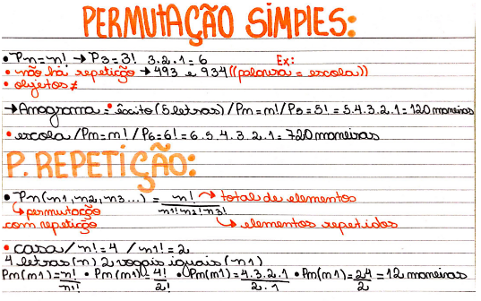

Permutações
Permutação é um conceito importante na teoria de combinatória, que lida com a contagem de objetos. Uma permutação é uma disposição específica dos elementos de um conjunto em uma ordem particular
Em termos simples, uma permutação de um conjunto de elementos é uma reorganização dos elementos desse conjunto em uma ordem específica. Por exemplo, considere o conjunto {A, B, C}.
- As permutações desse conjunto seriam: ABC, ACB, BAC, BCA, CAB, CBA.
Cada uma dessas permutações é uma ordem diferente dos elementos do conjunto original.
A fórmula para calcular o número de permutações de um conjunto de "n" elementos é dada por "n!", que representa o fatorial de "n". O fatorial de um número é o produto de todos os números inteiros positivos de 1 até aquele número. Matematicamente:
- n! = n × (n - 1) × (n - 2) × ... × 3 × 2 × 1
Por exemplo, para um conjunto de 3 elementos, como {A, B, C}, o número de permutações possíveis é 3! = 3 × 2 × 1 = 6.
É importante observar que, em permutações, a ordem dos elementos importa. Ou seja, a permutação "ABC" é diferente da permutação "ACB" porque a ordem dos elementos é distinta.
Além disso, existem casos em que nem todos os elementos são diferentes, ou seja, quando há elementos repetidos. Nesses casos, a fórmula do fatorial precisa ser ajustada para lidar com as repetições, utilizando o conceito de permutações com repetição. Existem dois tipos principais de permutação: permutação sem repetição e permutações com repetição.
